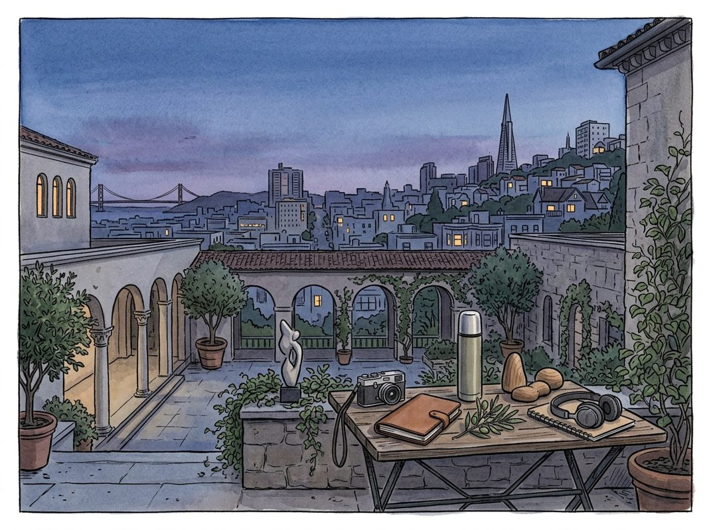

8/23

播客简报 2026-08-23
历史精选
Nvidia Part III: The Dawn of the AI Era (2022-2023)
来源：Acquired
原链接：https://www.acquired.fm/episodes/nvidia-the-dawn-of-the-ai-era
状态：已读网页 transcript
本期播客深入剖析了Nvidia如何凭借数十年的技术积累和前瞻性战略，在2022-2023年生成式AI浪潮中抓住历史性机遇，成为新计算时代的基石，对于理解AI产业格局和Nvidia的成功路径至关重要。
- AI的“大爆炸”时刻与Nvidia的早期机遇：2022年，全球金融市场一片低迷，Nvidia也因库存积压面临困境。然而，同年秋季，OpenAI的ChatGPT横空出世，以史上最快速度达到亿级用户，标志着AI的“Netscape时刻”乃至“iPhone时刻”到来。播客追溯至2012年，多伦多大学研究员Alex Krizhevsky、Jeff Hinton和Ilya Sutskever凭借AlexNet算法在ImageNet竞赛中取得突破，将图像识别错误率从25%大幅降至15%。他们利用两块Nvidia GeForce GTX 580消费级显卡，通过Nvidia的CUDA平台训练卷积神经网络，展现了GPU并行计算在AI领域的巨大潜力。Nvidia创始人黄仁勋在2021年提出的万亿美元潜在市场（TAM）预测，当时被认为过于激进，如今却因AI的爆发而加速实现，印证了其前瞻性。
- OpenAI的诞生与AI人才争夺战：AlexNet团队的成功引发了AI人才争夺战。Alex、Jeff和Ilya随后被谷歌收购，加入谷歌大脑团队，与DeepMind一起，谷歌和Facebook形成了AI研究的“双头垄断”。2015年，埃隆·马斯克和萨姆·奥特曼担忧AI技术被少数巨头掌控，在一次晚宴上试图招募顶尖AI研究员，但多数人因优厚待遇和研究环境不愿离开。唯独Ilya Sutskever被说服，离开谷歌，与马斯克和奥特曼共同创立了非营利性AI研究机构OpenAI，担任首席科学家。OpenAI的创立初衷是希望在大型科技公司之前实现通用人工智能（AGI），并确保其开放和普惠。
- Transformer模型的革命性突破：在OpenAI成立初期，其研究方向仍停留在DOTA II游戏AI等狭窄应用。然而，谷歌大脑团队在2017年发表了里程碑式的论文《Attention Is All You Need》，提出了Transformer模型。该模型引入了“注意力机制”，允许模型在处理序列数据（如语言翻译）时，同时关注输入文本的不同部分，而非像传统循环神经网络（RNN）那样顺序处理，从而克服了上下文窗口短的限制。尽管Transformer的计算复杂度为O(N^2)，但其固有的并行性使其非常适合在拥有大量核心的GPU上运行，极大地提升了训练效率和模型规模，为后续大语言模型的崛起奠定了算法基础。
- 大语言模型的崛起与OpenAI的商业化之路：Transformer模型使得“下一词预测”和无监督预训练成为可能。模型通过阅读海量未标记文本数据，自行推断语言结构和含义，展现出惊人的“涌现能力”：随着参数和训练数据量的增加，模型性能呈非线性增长，甚至能进行推理。然而，训练这些模型所需的巨大计算资源，使得OpenAI在2018年面临资金困境，导致埃隆·马斯克退出。2019年，OpenAI转型为营利性实体，并获得微软10亿美元投资，成为其独家云服务提供商。此后，GPT-3（2020）、GitHub Copilot（2021）相继问世，微软追加投资，最终在2022年11月发布ChatGPT，并在2023年推出GPT-4，彻底引爆了生成式AI时代。
- Nvidia数据中心战略的厚积薄发：生成式AI的爆发，对GPU算力提出了前所未有的需求，且主要通过云端部署。这恰好与Nvidia过去五年在数据中心领域深耕的战略完美契合，是“机遇与准备相遇”的典范。Nvidia一直致力于构建一个以GPU加速计算为核心的数据中心平台，旨在取代传统以CPU为主导的x86架构。尽管早期市场对数据中心GPU的增长驱动力存在疑虑，但黄仁勋坚信“数据中心就是计算机”的愿景，并为此进行了大量投入。AI的浪潮验证了Nvidia的远见，数据中心业务已成为其营收增长的绝对主力。
monday.com: Work Management Software - [Business Breakdowns, EP.217]
来源：Business Breakdowns
原链接：https://joincolossus.com/episode/monday-com-work-…agement-software/
状态：已读完整音频 transcript
这期播客深入剖析了工作管理软件平台Monday.com的崛起之路，揭示了其通过极致的平台灵活性和“乐高积木”式的可定制性，在竞争激烈的市场中脱颖而出，实现惊人增长的秘诀。它适合所有对SaaS商业模式、平台战略、创业成长故事以及如何通过产品创新解决用户痛点感兴趣的听众。
- Monday.com：从任务管理到全能工作操作系统：Monday.com最初于2012年2月由Roy Mann和Eran Zinman创立，并在2014年以DePulse之名正式推出。它并非仅仅是一个简单的任务管理工具，而是致力于成为一个全面的工作管理平台，帮助各种规模的团队和组织规划、追踪并运行任何类型的工作流程。其产品功能已从最初的项目管理扩展到客户关系管理（CRM）、服务管理、软件开发工具等多个垂直领域。这种高度的灵活性意味着Monday.com能够服务于极其广泛的用例，解决组织内不同团队的各种问题，从而极大地提升工作效率。播客强调，工作管理是一个巨大的市场，因为它直接关系到劳动力预算和员工的工作效率，因此Monday.com的广阔应用前景为其带来了巨大的市场机遇。
- 惊人的增长轨迹与创始人洞察：Monday.com的成长速度令人瞩目。从2014年首年的40万美元年度经常性收入（ARR），到2016年底的650万美元，随后三年实现了10倍增长，再在五年内飙升12倍，达到如今超过10亿美元的ARR，并拥有超过140亿美元的市值。这种爆发式增长的背后，离不开两位创始人的远见。Eran Zinman曾有过一次创业失败的经历，从中汲取了宝贵的教训，这些经验无疑为Monday.com的成功奠定了基础。他们最初在Wix.com内部构建了一个原型产品，因其受欢迎程度而独立出来，并将其发展成为一个更广泛的平台。尽管市场竞争激烈，Monday.com凭借其独特的产品理念，在早期就展现出强大的市场穿透力，并一直保持至今。
- 核心竞争力：极致的平台灵活性与“乐高积木”哲学：Monday.com之所以能在众多竞争者中脱颖而出，其核心在于产品设计的原始理念——极致的灵活性。创始人观察到，当时市面上的许多软件产品都以非常特定的方式构建，用户必须按照软件预设的模式来工作，这极大地限制了团队协作的效率、能力和可能性。Monday.com的目标是打破这种限制，构建一个基于“基元”（primitives）或“构建块”（building blocks）的平台。播客中将其形象地比喻为“软件乐高积木”，用户可以根据自己的需求随意组装，构建出完全符合自身工作方式的定制化流程。这种高度可定制的特性，使得Monday.com能够适应不同行业、不同规模、不同职能团队的独特需求，成为其最强大的竞争优势。
- 从内部工具到外部平台的成功转型：Monday.com的起源故事也颇具启发性。它最初是作为Wix.com的内部工具DePulse而生，旨在解决Wix团队自身的工作管理痛点。当这个内部工具被证明非常有效且受欢迎时，创始人看到了将其产品化并推向更广阔市场的潜力。这种从“自用”到“普惠”的转型路径，不仅验证了产品的实用性和价值，也为后续的快速扩张奠定了坚实基础。通过将内部实践中验证过的解决方案外部化，Monday.com能够确保其产品真正解决用户痛点，并具备强大的生命力。
- 广阔的市场机遇与持续的垂直化拓展：工作管理软件市场是一个庞大且不断增长的领域，因为它直接影响到企业运营的核心——员工效率和协作。Monday.com的平台化战略使其能够不断拓展新的垂直市场，例如CRM、服务管理和软件开发等。这种横向和纵向的扩展能力，使得Monday.com能够持续捕获更大的市场份额，并增加其在客户组织内部的渗透率。通过提供一系列预构建的解决方案（如Monday Sales CRM、Monday Dev等），同时保留底层平台的灵活性，它既满足了特定行业的需求，又保持了其核心的通用性，从而在不同细分市场中保持竞争力。